VoiceNavigator ↗
From usability findings to interface decisions—and what discoverability means for agency.
Five research-led projects, each told in two complementary ways: the design story follows the work and decisions; the critical inquiry examines assumptions, institutions, power, and what remains unresolved.
How do you make an interface discoverable when its controls are invisible?
For people with limited hand dexterity, touch interactions can make even ordinary mobile tasks difficult. VoiceNavigator explored hands-free control of Android devices, but the initial challenge was not simply recognizing speech. It was helping people understand what they could say, what the system could do, and how to move through a multi-step task.
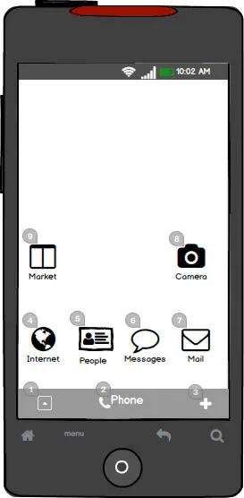
I led research and interaction design, shaped usability evaluation, synthesized findings, and guided iterations of the voice interface.
Ten usability sessions with nine participants surfaced difficulties with command discoverability, continuous-listening expectations, and visual clutter. A revised prototype was evaluated in five additional sessions.
We explored simplified numbered labels, contextual prompts, tutor messages, and a “What Can I Say?” command menu. Each choice required balancing visibility, learning, and limited mobile screen space.
The simpler label treatment was preferred, but some new help messages introduced their own attention costs. The result was a more nuanced understanding of contextual learning in mobile voice interfaces.
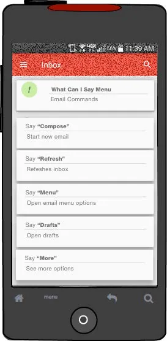
Accessible interaction requires more than an alternative input method. People need to discover capabilities, understand feedback, and recover from mismatched expectations.
Outcome: evaluated interaction concepts and design implications; not a claim of long-term deployment or quantified accessibility gains. Publication: Corbett & Weber, MobileHCI 2016.
A graphical interface usually makes at least some actions visible: a button suggests a click, a menu hints at choices. In a voice interface, possible actions can remain hidden until someone already knows the vocabulary. For people who rely on hands-free interaction, that lack of discoverability is more than an inconvenience—it can determine whether a task is possible.
Our research focused on multi-step mobile tasks, where a user must move through changing interface states. We treated voice as an interaction design problem involving feedback, learning, and expectations—not simply a speech-recognition feature.
I led the research and design process. An initial ten usability sessions with nine participants exposed problems with command discovery, interpreting the system's listening behavior, and managing on-screen guidance. These findings informed iterations to numbered overlays, contextual tutor messages, and a “What Can I Say?” menu. A revised prototype was then evaluated in five additional sessions.
Simpler numbered labels helped people connect voice commands to visible interface elements, but labeling every action competed with limited mobile screen space.
Contextual prompts provided guidance at the moment of need. Their usefulness had to be balanced against the cost of interruption and visual attention.
The command menu made possible utterances explicit, while also raising a new expectation: some users treated help as an actionable interface rather than a reference.
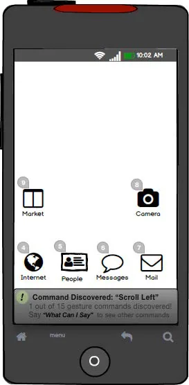
The familiar design principle of making actions visible becomes difficult when an interface is operated by speech. Voice commands can be invisible, and a user may not know whether a failed attempt reflects recognition, unavailable functionality, or an incorrect mental model. The interface therefore has a responsibility to communicate its boundaries and offer recoverable paths forward.
This is one reason the project remains relevant to my later work on AI-mediated interaction. Systems that accept open-ended language can feel flexible while concealing their actual capabilities. Good interaction design needs to help people form calibrated expectations, rather than merely invite them to try.
This connection to contemporary AI interfaces is a present-day interpretation of the design implications, not a claim that the 2016 study evaluated generative AI or agentic systems.
The work produced evaluated concepts and a clearer account of the trade-offs between discoverability, learning, and interface complexity. It did not establish long-term use or deployment at scale. Its enduring lesson for me is that an alternative input method is only accessible when people can understand how to use it and how the system responds.
What happens when the people affected by a technology can challenge the question being asked?
New York City's Office of Technology and Innovation approached our team with a question about physical signage for sensors in public space. Rather than treating signs as a finished solution to optimize, we used them as tangible materials for residents to investigate what transparency should mean.
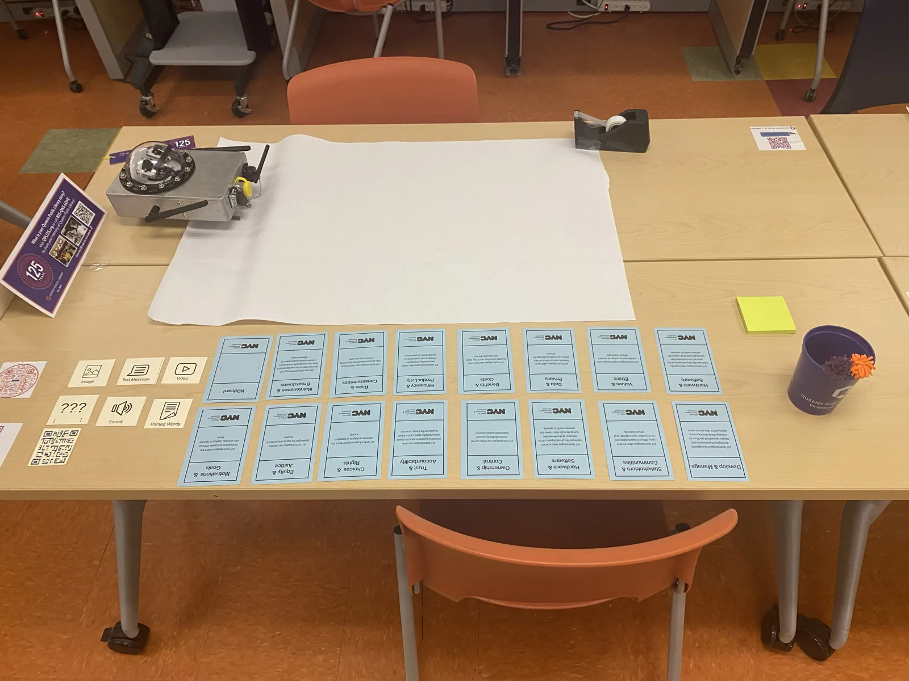
I led the research design, workshop methodology, facilitation, institutional coordination, qualitative synthesis, and writing of the resulting publication.
Across three participatory workshops with 40 New York City residents, participants created and discussed sensor-sign concepts. The artifacts helped reveal concerns that could have been obscured by a conventional request for signage requirements.
Residents raised questions about privacy, rights, accountability, economics, community benefit, and institutional responsibility. The design question shifted from “what information should the sign display?” to “what would make technology deployment accountable to the people who live with it?”
The research identified limitations of disclosure-centered transparency and offered implications for participatory governance of urban sensing. The paper received a CHI 2024 Best Paper Honorable Mention.

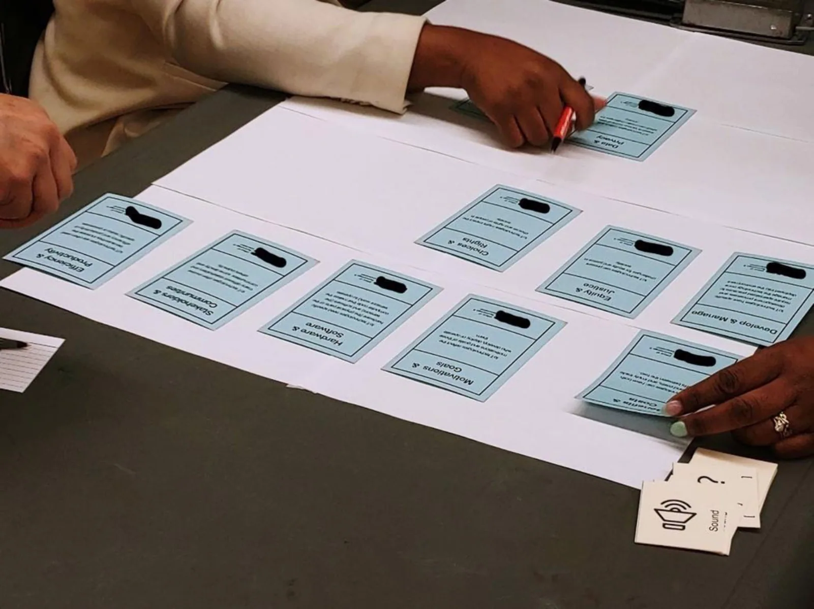
Participation is not only a means of collecting requirements. It can reveal that the initial design problem is too narrow.
The study produced research findings, not a claim that a citywide signage system was deployed. Read the CHI 2024 paper ↗
Urban sensing systems are often installed in public spaces where residents encounter their consequences but may have little involvement in decisions about their use. Our city collaborators began with a plausible communication question: what should physical signage tell people about sensors?
That question already defined transparency as an information-delivery problem. Our research-through-design approach deliberately kept the premise open. A sign could be a candidate interface, but it could also become a way for residents to articulate what was missing from the city's relationship with them.
I led the workshop research design, facilitation, partnership coordination, synthesis, and writing. In three workshops, 40 NYC residents worked with physical materials to create signs and discuss what a person should know or be able to do when encountering urban sensing technology.
These artifacts were not treated only as competing layouts to be scored against an existing brief. They gave participants a concrete medium through which to express concerns, speculate about alternative civic relationships, and challenge what transparency should accomplish.
Design materials grounded an otherwise abstract discussion about data collection and governance in a public-space encounter.
Ideas that exceeded a sign's ordinary informational function were important evidence about the limitations of the initial brief.
Privacy, community benefit, institutional responsibility, and opportunities for public response emerged as connected design concerns.

Disclosure is valuable, but information alone does not determine whether people can challenge an institution's decisions. A sign may tell residents that a sensor exists without addressing who authorized it, who benefits, how data is used, or what avenues for contestation exist.
Our analysis therefore treats transparency as a social and political relation, not only an interface property. The project suggests that participatory design can help residents question whether a technology should be deployed, how it should be governed, and what responsibilities its operators carry.
This is the academic contribution I would foreground on a research-oriented website: the work is simultaneously an exploration of signage as an interaction medium and a critique of the assumption that greater disclosure automatically produces public trust.
These are interpretations of the participatory inquiry, not evidence that any particular governance reform was implemented.
Leading the project required balancing a city partner's practical question with a research process open to more fundamental challenges. Rather than promise a definitive signage system, we produced a set of findings about the limits and opportunities of transparency and the role of participatory design in reframing civic technology.
The resulting CHI 2024 paper received a Best Paper Honorable Mention. For my design practice, the lasting lesson is that prototyping and participation can produce knowledge that a conventional requirements process might never solicit.
How might civic technology support trust instead of simply speeding up transactions?
Working with Atlanta's Mayor's Office of Immigrant Affairs, I investigated how residents navigated housing-code problems and how staff sustained the relationships needed to help them. The work revealed that trust and institutional distance were core design considerations.

I led ethnographic fieldwork, UX framing, and early sketching, then coordinated a designer and programmer as concepts developed. I did not personally produce every interface or implement the system.
The concept linked a bilingual illustrated code guide, mobile issue reporting, generated communications, and an internal map to support staff follow-up and neighborhood-level sensemaking.
Automating a process can reduce friction while unintentionally weakening the trusted relationships that make it work. Our design exploration considered how digital tools could complement intermediaries rather than erase them.
A connected service concept and published research on designing civic technology with trust. We do not claim scaled deployment or measured housing outcomes.
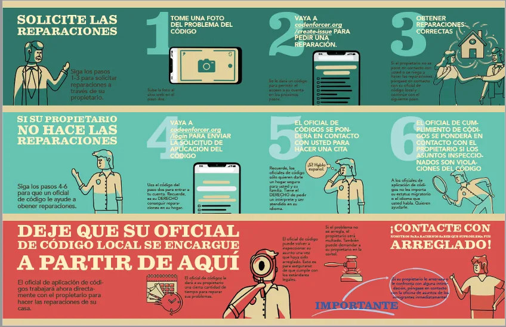
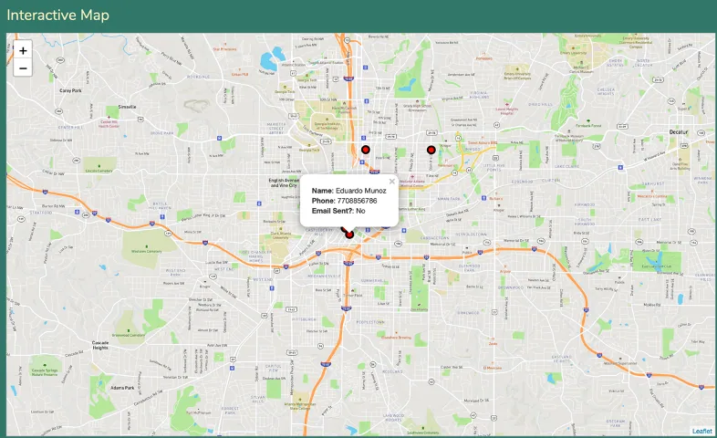
The project grew from design ethnography with Atlanta's Mayor's Office of Immigrant Affairs. Rather than beginning with direct access to residents, the inquiry examined how staff built relationships with immigrant communities and helped people navigate housing-code concerns. That distinction matters: office staff were the principal design collaborators, and the research should not be represented as a resident co-design process.
I led the fieldwork and early UX framing, produced exploratory sketches, and coordinated with a designer and programmer. The goal was to turn situated knowledge about the office's practices into a coherent service concept without treating trust as a transaction that software could simply automate.
Contemporaneous notes from a November 2019 design review show how paper prototypes supported conversations about information, institutional roles, and process complexity. The housing-rights guide was revised to be less text-heavy and more visual. A larger illustration of a house made housing-code issues easier to point to, while representations of residents, landlords, and enforcement officers helped clarify their different roles.
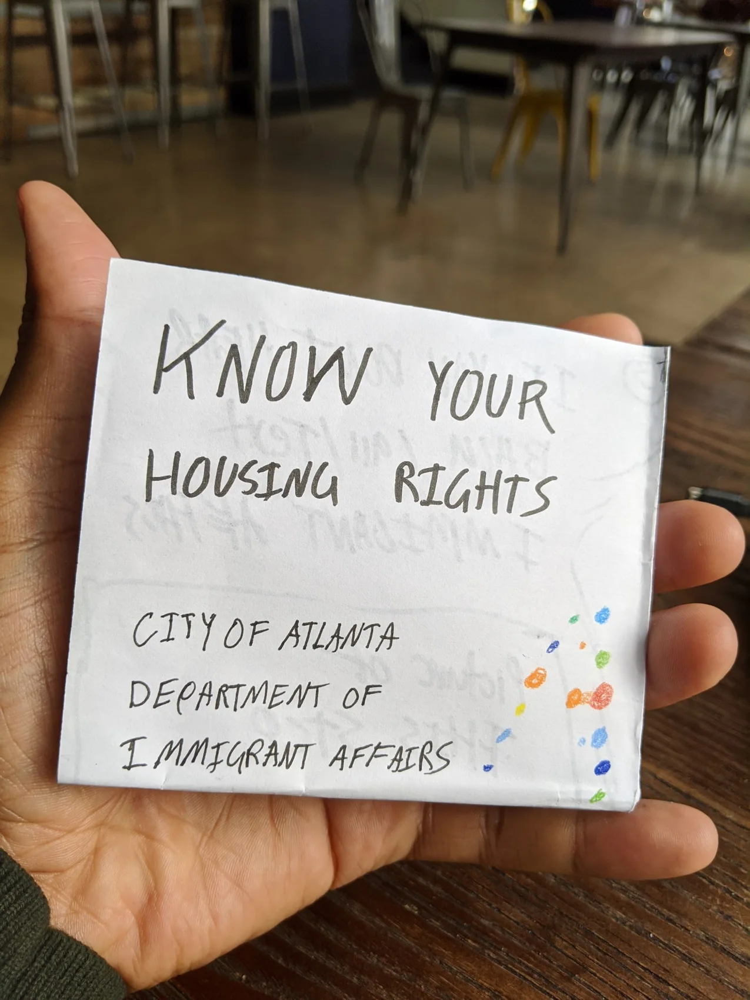
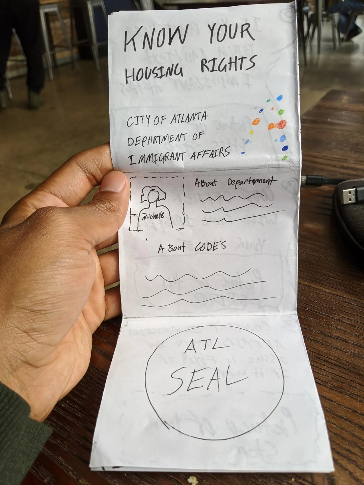
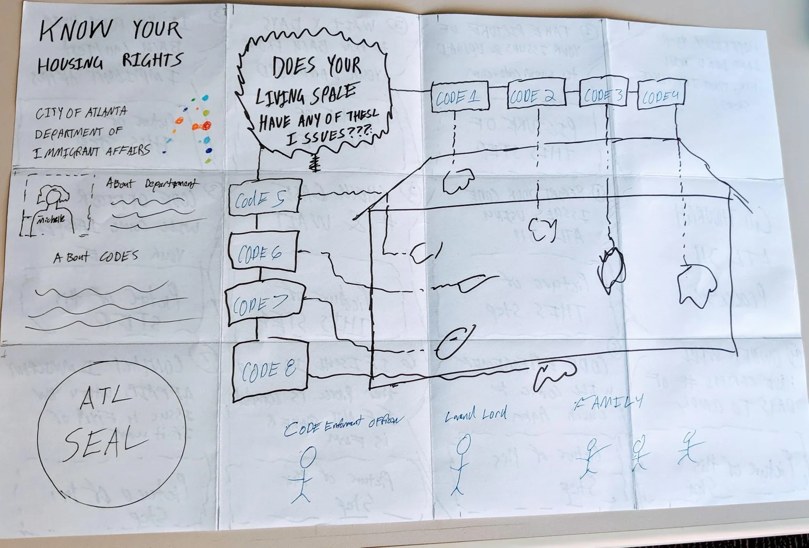
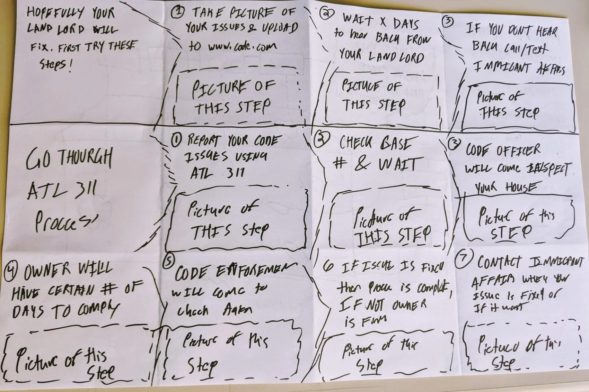
The design review was itself a research setting. Staff responded to artifacts, described how they handled complaints, and exposed assumptions about who would take responsibility for each step. These conversations shaped the design while also revealing the institutional politics behind apparently straightforward UX decisions.
The initial guide separated landlord repair requests from a subsequent ATL 311 complaint process. After I contacted code enforcement and confirmed that email submissions could be received, I proposed reusing the information already collected and collapsing redundant steps. The sketch documents the reconsidered flow, not a measured reduction in processing time.
An early map concept would have displayed housing issues to residents. Staff raised concerns about maintaining timely and accurate status information. The map was removed from the resident-facing guide and reconsidered as an internal tool for staff coordination and advocacy.
Staff described limitations of group messaging and social platforms for reaching communities. The team explored targeted text messaging and follow-up prompts as ways to support outreach and learn whether issues had been resolved. These remained design possibilities, not verified service outcomes.
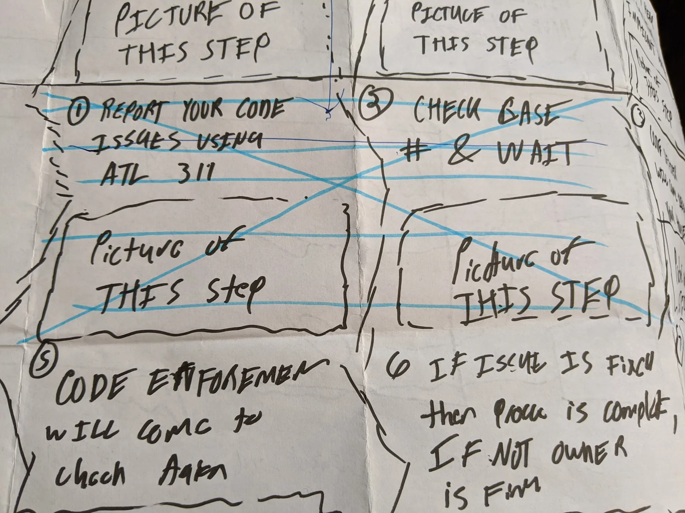
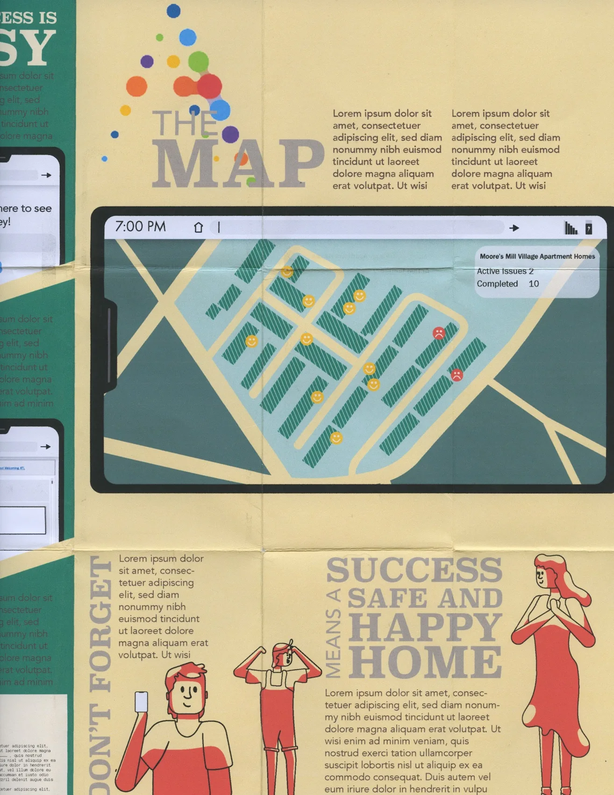
One reading of the design is that it makes a difficult municipal process more usable. A second, more critical reading asks what happens when public institutions make services efficient by shifting responsibility onto residents. The research describes this tension through the idea of trust as distance: social, institutional, and power relations shape whether a service can be trusted, and those relations cannot be solved by interface polish alone.
My own fieldnotes are candid about moments when I advocated streamlining steps even as I questioned whether this might diminish the office's relational work. That tension is part of the design research, not something to edit out of the story. The same tools that could withdraw staff from direct mediation could also make it easier to maintain contact and follow up.
As a designer and researcher, I take this project as a reminder that a good workflow is not necessarily a good institutional arrangement. A service needs to be evaluated for what it enables, whose labor it changes, and what responsibilities it redistributes.
A connected civic service concept and a research account of how trust, institutional distance, and public-service efficiency shape design decisions. No claim of scaled deployment or quantified housing outcomes.
Evidence: original November 15, 2019 design-review notes and Corbett & Le Dantec, CHI 2021. Staff names and personally identifying details from fieldnotes are intentionally excluded from the public narrative.
From learning about AI to having a meaningful voice in how it is governed.
Across work with NYU's Center for Responsible AI, a contribution to New York City's AI Strategy, and research at Google, I have investigated a connected set of questions: How can people understand systems that affect them? What makes public engagement meaningful? And what would it mean to redistribute power—not just solicit opinions—in the development and governance of AI?
This is a thematic case study connecting distinct projects and publications, not a claim that they were one commissioned engagement or a single continuous program.
At Google Research (2022–2025), I conducted responsible AI research within the Technology, AI, Society, and Culture (TASC) team. The team’s interdisciplinary approach treated communities as experts in their own contexts and examined how their knowledge might inform AI development, from problem framing through evaluation. My own research addressed public participation and power in AI decision-making and community–industry collaboration. This team context helps explain the trajectory of the work, but does not imply individual authorship of every TASC initiative.
Read the Google Research TASC overview ↗At NYU, I helped design and facilitate participatory AI learning activities and led qualitative research into participants' learning experiences and the iterative educational design process. I also contributed to or reviewed portions of the NYC AI Strategy text in detail, as acknowledged by the City.
As a coauthor of Power and Public Participation in AI, I contributed to an analysis of how participation approaches distribute decision-making power. As a coauthor of We Are AI, I helped document a public-learning approach and its iterative evaluation.
Decisions about AI shape access to work, information, public services, and opportunity. Yet people affected by these systems are rarely involved on equal terms in deciding what they should do. Technical knowledge can be an entry point to engagement, but knowledge alone does not create a right to influence outcomes.
I approached these questions through three different forms of work: creating and studying accessible public learning experiences; contributing expertise to a city-level governance strategy; and studying the actual power afforded by participation practices in AI research.
We Are AI: Taking Control of Technology developed a public course for people without specialist AI training. The work brought together NYU's Center for Responsible AI, public library and peer-learning partners, and a curriculum using accessible modules, group discussion, real-world examples, and multilingual comics.
My contribution centered on developing qualitative research to understand participants' experiences of the classes and the design process itself. I also helped design and facilitate engagement activities, including roundtables. This is distinct from claiming sole authorship of the curriculum or responsibility for every course offering.
The published study describes multiple iterations of the learning experience and evaluates two later offerings with professional and library audiences. In those offerings, mean self-assessed understanding of responsible AI increased from 4.08 to 6.33 and from 4.19 to 5.89 on a ten-point scale. These are self-reported learning measures—not evidence of increased civic power or policy change.
Evidence: Stoyanovich et al., We Are AI: Taking Control of Technology, AAAI 2025. The paper describes collective project outcomes; the contribution description above reflects my stated role.
The 2021 NYC AI Strategy addresses the City's AI ecosystem, government applications, governance, partnerships, education, and workforce development. I was one of the external contributors or detailed reviewers acknowledged by the Mayor's Office of the Chief Technology Officer.
This work matters to the broader story because city strategies translate principles into the practical questions public institutions must confront: who procures systems, who evaluates them, how they are governed, and what the public can know or influence. My documented role was contribution to or detailed review of the text—not authorship of the strategy, leadership of its implementation, or responsibility for subsequent city policy.
Evidence: New York City AI Strategy (October 2021), acknowledgments, p. 3. The strategy's sections on city governance and partnerships provide institutional context.
In research with Remi Denton and Sheena Erete, we used Sherry Arnstein's Ladder of Citizen Participation to analyze 21 published approaches to participation in AI. The analysis found that most approaches emphasized informing or consulting people rather than partnership or delegated control. It also identified a recurring reporting problem: research papers often did not make clear how much decision-making power participants actually held.
This was not a usability test or a single participatory workshop. It was a critical analysis of research practices and their claims. The design implication is practical: teams should specify which decisions participants can influence, what is negotiable, how contributions will be acted upon, and what accountability exists when suggestions are not adopted.
Interpretive summary of the analytical lens, not a reproduction of Arnstein's full eight-rung ladder. Evidence: Corbett, Denton & Erete, EAAMO 2023.
The public-learning project developed and studied an accessible approach to responsible AI education. The City acknowledged my contribution to or review of its AI strategy. The participation research offered a framework for critically assessing how power is distributed in AI engagement. Together, these projects sharpened my approach to public agency in technology design.
They do not establish that education alone produced civic empowerment, that I directed NYC's AI policy, or that the participation paper itself changed industry governance. Those are separate outcomes requiring separate evidence.
Public participation can be a meaningful democratic practice, but it can also legitimize decisions that institutions have already made. The distinction matters especially in AI, where technical complexity and proprietary systems can make it difficult for affected people to challenge assumptions or understand the consequences of deployment.
Power and Public Participation in AI foregrounds this asymmetry: an invitation to a workshop may offer visibility without authority. Asking people what they think does not tell us whether they can change a system's purpose, reject its use, alter the distribution of benefits, or hold developers accountable.
Public education is often presented as a way to help people adapt to new technologies. A more demanding view asks whether learning can help people identify the political choices embedded in technology and participate in collective decisions about it.
We Are AI treated responsible AI as a subject for public discussion, not simply technical instruction. Peer learning and accessible materials can lower barriers to participation, especially when people are not expected to arrive with specialized vocabulary. Yet even a successful learning experience cannot by itself overcome unequal access to institutions, unequal time and resources, or the absence of formal channels for influence.
This distinction is important for social justice: the people most affected by automated decisions may be the least able to attend a consultation or translate an objection into institutional change. The design question therefore extends beyond content accessibility to representation, material conditions, and decision rights.
Current AI governance increasingly addresses audits, disclosure, organizational responsibility, and oversight. The EU AI Act has introduced phased obligations, including rules for general-purpose AI and transparency. In New York City, Local Law 144 requires certain employers using automated employment decision tools to arrange bias audits and provide notices. NIST's AI Risk Management Framework offers voluntary guidance for identifying and managing AI risks.
These approaches matter, but they also invite the same questions raised by my research: Who determines what counts as an acceptable risk? What can an affected person do with an audit summary or notice? When can people challenge deployment rather than merely understand it? And who has the authority to change course?
For example, New York State's December 2025 audit of NYC's enforcement of Local Law 144 identified weaknesses in how potential noncompliance was detected and investigated. That distinction between having formal rules and making them effective is precisely why public-facing governance cannot be reduced to transparency alone.
This section is a present-day interpretation connecting the earlier research to public developments; it is not a claim that these laws or frameworks emerged from my projects. Regulation and enforcement change over time; sources linked below were reviewed in October 2026.
Who defines the problem, and can affected communities question whether AI should be used at all?
What decisions can participants actually change? What resources, access, and compensation make participation feasible?
How can people contest outcomes, obtain remedy, and influence whether a system continues operating?
These are the kinds of questions that connect my academic work, public education, and design practice. They move responsible AI beyond a checklist of technical attributes toward the design of relationships, institutions, and decision-making processes.
What does a humanlike interface lead people to expect?
Generative AI makes it possible to work with software through natural conversation. But an interaction that feels intuitive can also make errors harder to notice. At Google, I helped investigate how technology professionals navigate that tension—and what their experience reveals for the design and evaluation of AI products.
30
professionals using, developing, or responding to generative AI
As a research collaborator and coauthor, I contributed to transcript coding, codebook development, and interpretation alongside Mark Diaz, Renee Shelby, and Andrew Smart.
We used focus groups to explore an emerging problem space, then combined inductive and deductive thematic analysis to connect workers’ experiences across roles.
We developed a conceptual hazard map connecting humanlike characteristics with potential consequences for users, workers, and organizations.
Move from “Does this feel natural?” to “What expectations does it create, and can people recognize when it is wrong?”
Our analysis connected the qualities workers perceived as humanlike with six potential hazards. The map makes those concerns visible—and gives teams a broader starting point for evaluating an AI experience.
Checking outputs, correcting mistakes, and updating guidance can create new work.
Fluent interaction can encourage confidence beyond a system’s actual reliability.
Convincing synthetic material can make deception and fraud harder to detect.
Unclear system identity and AI-mediated communication can undermine relationships.
Uneven knowledge can leave people less equipped to recognize limitations or abuse.
Workers anticipated displacement, loss of skills, and less distinctive creative work.
Attributing human qualities to AI can interact with these hazards. It is not synonymous with humanlike design, and humanlike features can introduce hazards even without it.
Simplified adaptation of Figure 1 and the six hazard themes in Diaz, Shelby, Corbett & Smart (CHI 2026). These are worker-identified potential hazards, not established causal pathways or inevitable harms. Read the original map ↗
“it just answers like a person but it also does make it harder to detect errors”
Workers described humanlikeness in different ways: conversational input, polished outputs, responsiveness, and seemingly sophisticated capabilities. Treating these as one property obscures what a team should evaluate. Our analysis separated the characteristics people noticed from the hazards they anticipated.
One methodological adjustment mattered: after an initial mixed-role group drifted toward adjacent topics, role-specific groups supported more focused discussion of everyday tasks and shared challenges.
A content manager described natural answers as intuitive yet harder to scrutinize. An engineer recounted generated code that would have been dangerous to execute.
Design question: Can people assess an answer before relying on it—or authorizing an action?
Workers described checking outputs and managing convincing synthetic material. A policy worker struggled to keep pace with AI-generated identification documents.
Design question: Whose review and correction effort must be included when evaluating whether the product helps?
Engineers emphasized accuracy; policy workers highlighted fraud; communications workers connected factual errors to damaged credibility.
Design question: Which users and downstream roles need to inform the research and evaluation plan?
Product questions are my interpretation of the findings, not claims of shipped changes or tested mitigations.
For agentic experiences, these findings motivate research into how people judge capability, delegate work, and recognize when intervention is needed. I would use them to frame studies of approval, verification, and recovery—not assume that a reassuring conversational experience establishes readiness to act.
This project reflects the approach of Google Research’s Technology, AI, Society, and Culture (TASC) team, where I worked: bringing interdisciplinary, context-sensitive research into how AI is developed and evaluated. Here, workers’ experience revealed consequences beyond the immediate interaction.
That is the responsible AI perspective I bring to UX: investigate who benefits, who absorbs new work, and whose knowledge is needed to make a product useful and dependable.
Our output was an empirical account of worker perspectives and a conceptual hazard map. The study did not directly test autonomous agents or prove that particular interface features cause harm. It provides grounded questions for subsequent design and evaluation.
This study reflects my work on Google Research’s Technology, AI, Society, and Culture (TASC) team: bringing qualitative, interdisciplinary research into how AI is designed and evaluated. By examining people’s everyday experiences alongside technical capabilities, I help surface the expectations, consequences, and unmet needs that should inform product decisions.